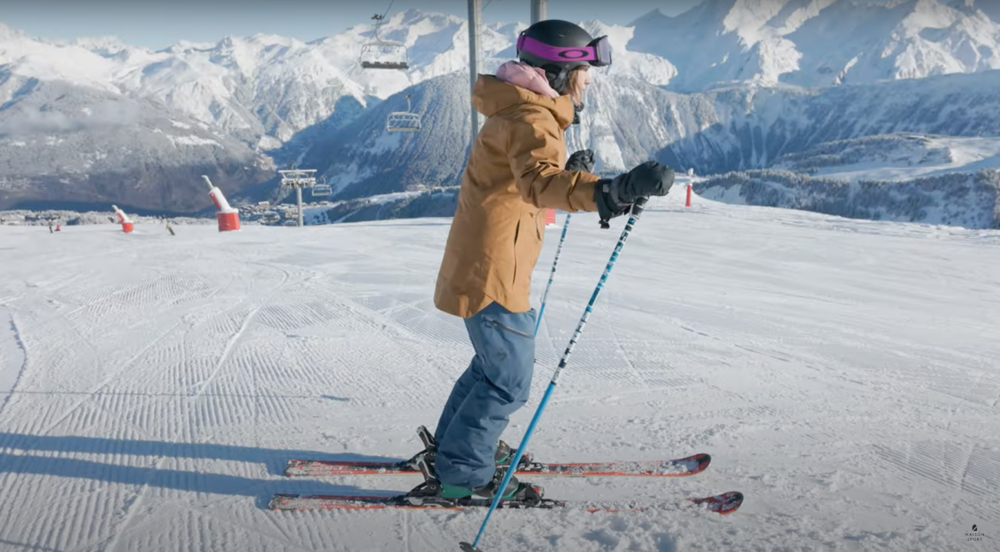
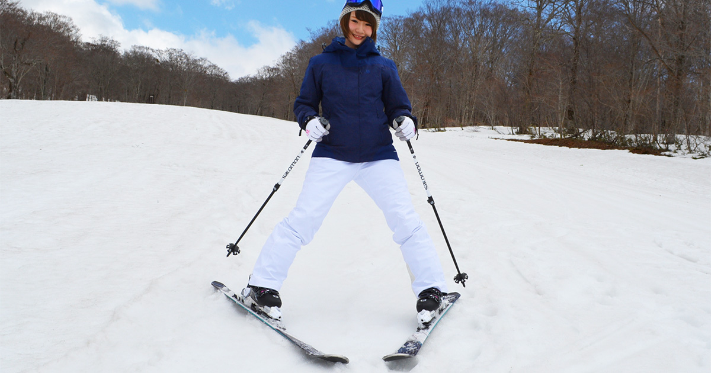

Pareiza stāja
Pareiza stāja slēpojot ir nedaudz saliektas kājas ceļgalos, ķermeņa smaguma centrs tiek vērsts uz priekšu, kā arī mugurai ir jābūt taisnai, bet atbrīvotai. Nūjas var izmantot pēc brīvas izvēles, lai gan tās nav obligātas, tās var palīdzēt atstumties, kā arī noturēt labāk balansu.

Foto: https://www.snow-forecast.com/whiteroom/a-guide-to-the-perfect-skiing-stance-in-all-conditions-with-maison-sport/
Kā bremzēt
Iesācējiem iesaka visbiežāk izmantot tā saukto “picas” veida bremzēšanu. Slēpes veido V burtam līdzīgu formu - purngali tuvāk kopā, bet aizmugures platāk. Jo vairāk piespied slēpju iekšmalas sniegā, jo spēcīgāka bremzēšana. Svarīgi saglabāt līdzsvaru un skatienu vērstu uz priekšu, nevis uz slēpēm. Kā arī cilvēki, kuriem ir lielāka pieredze kalnu slēpošana, viņi izmanto parallēlo bremzēšanu, tas nozīme ka sagriež slēpes parallēli pret kalna nogāzi, un tad slēpes kanti bremzē.

Foto: https://japan-skiguide.com/article/howto/ski/detail/ski017/lang/en/
Kā pagriezties
Pagriezienu veikšanai ir divi veidi parallēlais pagrieiziens un “picas” pagrieziens. Parallēlais pagrieziens sākas ar svara pārnešanu uz to slēpi, kas atrodas ārpus pagrieziena. Ķermeņa augšdaļa nedaudz pagriežas virzienā, kur vēlies doties, bet ceļi un gurni seko šai kustībai. Slēpēm jābūt parallēlām, vienai pret otru. Kā arī “picas” pagrieziens ir paradzēts iesācējiem. Tehnika ir līdzīga, tikai no slēpēm ir jāizveido V burts, un uz pagrieziena ārējās kājās ir jāliek svars, ja piemēram, tiek likts svars uz kreisās kājas, jūs sāksiet griezties pa labi.
Pamatprincipi slēpošanai
- Sāc ar lēzenu nogāzi vai vieglu trasi.
- Pirms slēpošanas veic iesildīšanos, dažus vienkāršus vingrinājumus.
- Skatiens vienmēr vērsts uz priekšu, nevis uz slēpēm.
- Kontrolē ātrumu, nevis ļauj tam kontrolēt tevi.
- Nesasteidz kustības, labāk lēnāk un pareizāk.
Ieteikumi iesācējiem
- Izmanto instruktora palīdzību, dažas nodarbības ļoti palīdz.
- Neizvēlies pārāk sarežģītas trases pirmajās reizēs.
- Ģērbies ērti un silti, bet ne pārāk biezās drēbēs.
- Neaizmirsti par ķiveri un aizsargiem, īpaši kalnu slēpošanā.
- Pēc kritiena nesteidzīgi piecelies, pārbaudi slēpes un turpini.